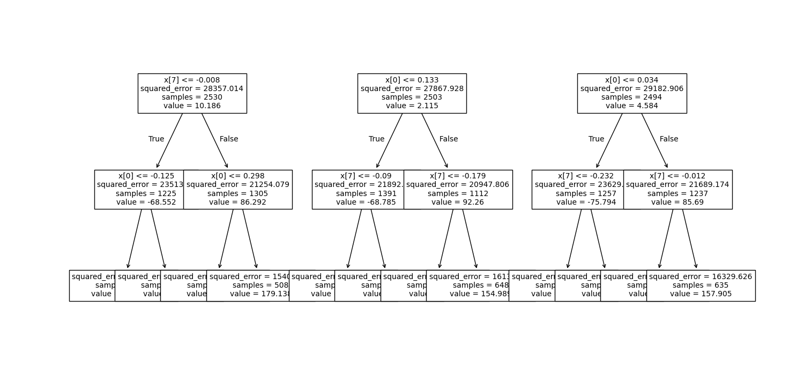
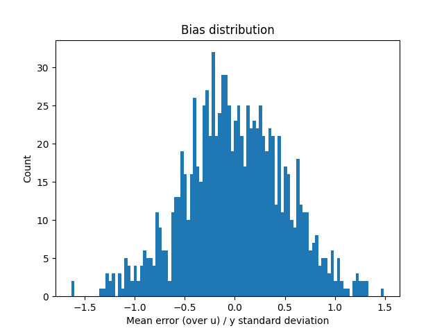
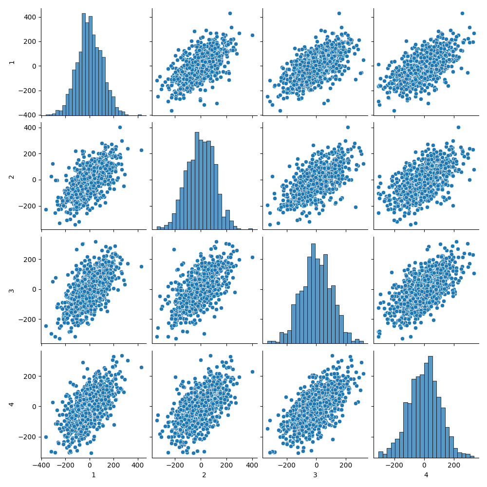

Bagging and boosting
Goals
Introduce the first of black–box modifications of a “weak learner”: - Introduce bagging - Intuitively for high–variance, low bias procedures - Bootstrap - Averaging the bootstrap - Decorrelating the trees (random forests)
Reading
The primary reading is @isl:2021:gareth 8.2. The reading in @esl:2009:hastie section 8.7 may also be useful. These notes are intended only as a supplement to the primary reading.
Randomized estimators
Suppose we’re using squared error loss, and we have a random learner that is approximately unbiased but high variance. Some examples of randomness could be:
- A random ordering of splits in the tree (i.e. a random tree topology)
- A random subset of the data
- A randomly selected set of features
- A random bootstrap sample of the data.
We’ll talk about some of these more below. For now, let’s represent the randomness with a random variable \(u\), so we have a random estimator \(\hat{f}(\cdot; u)\).
Suppoose that we think that the random estimator is approximately ubiased — over the randomness in both \(u\) and the new point \(\boldsymbol{x}, y\) — but that it may have high variance. Letting \(\epsilon(u) = y- \hat{f}(\cdot; u)\), this just means that
\[ \begin{aligned} \mathbb{E}_{u}\left[\mathscr{R}(\hat{f}(\cdot; \mathcal{D}, u))\right] ={}& \mathbb{E}_{u}\left[\mathbb{E}_{\boldsymbol{x},y}\left[\epsilon(u)\right]\right] \\={}& \mathbb{E}_{u}\left[ \mathbb{E}_{\boldsymbol{x},y}\left[\left(\epsilon(u) - \mathbb{E}_{u}\left[\epsilon(u)\right] + \mathbb{E}_{u}\left[\epsilon(u)\right]\right)^2\right] \right] \\={}& \mathbb{E}_{\boldsymbol{x},y}\left[ \mathbb{E}_{u}\left[\left(\epsilon(u) - \mathbb{E}_{u}\left[\epsilon(u)\right]\right)^2\right] + \mathbb{E}_{u}\left[\epsilon(u)\right]^2 \right] \\={}& \mathbb{E}_{\boldsymbol{x},y}\left[ \underbrace{\textrm{Variance}(\epsilon(u))}_{\textrm{Large}} + \underbrace{\textrm{Bias}(\epsilon(u))^2}_{\textrm{Hopefully small}} \right]. \end{aligned} \]
These might be called “weak learners,” in the sense that they are not very good in terms of squared error since their variance is high, but they have a special property of having low bias. What kinds of estimators look like this? This setup is motivated by the empirical fact that random regression trees tend to look somewhat like this, as we will see below.
The nice thing about this setup is that by averaging noisy estimators we can reduce their variance while keeping their bias unchanged. Specfically, imagine taking the agverage estimator
\[ \hat{f}(\cdot; \boldsymbol{U}) = \frac{1}{B} \sum_{b=1}^B \hat{f}(\cdot; u_b) \textrm{ for IID }u_1,\ldots,u_B. \]
Then
\[ \begin{aligned} \epsilon(\boldsymbol{U}) ={}& y- \hat{f}(\cdot; \boldsymbol{U}) = \frac{1}{B} \sum_{b=1}^B \epsilon(u_b) \Rightarrow\\ \mathbb{E}_{\boldsymbol{U}}\left[\epsilon(\boldsymbol{U})\right] ={}& \mathbb{E}_{u}\left[\epsilon(u)\right] \quad\textrm{ and }\\ \mathrm{Var}_{\boldsymbol{U}}\left(\epsilon(\boldsymbol{U})\right) ={}& \frac{1}{B} \left(\frac{1}{B} \sum_{b=1}^B \mathrm{Var}_{u}\left(\epsilon(u_b)\right) \right) + \frac{1}{B^2} \sum_{b \ne b'} \mathrm{Cov}_{u,u'}\left(\epsilon(u_b), \epsilon(u_{b'})\right). \end{aligned} \]
Note that the covariance term contributes to the squared loss in average over \(x\). So intuitively, two estimators are correlated if \(\mathrm{Cov}_{u,u'}\left(\epsilon(u_b), \epsilon(u_{b'})\right)\) tends to take the same value for all \(x\). The deleterious effect of covariance can be reduced by having positive covariance in some area of the space but negative covariance in another — that is, erring relative to the mean in different ways for different \(x\).
It follows that, as long as the random estimators are “not too correlated on average”, then by averaging them we keep their low bias the same, but reduce their variance. Of course, if there’s no randomness at all, you can see that the covarainces are all variances, and no reduction happens.
Bagging
A classic way to generate randomized estimators is to use bootstrap samples. Let \(\mathcal{D}_b^*\) denote a bootstrap sample from the original dataset, where the bootstrap distribution is a random distribution conditional on the original dataset \(\mathcal{D}\), with probability distribution
\[ \mathbb{P}_{\,}\left((\boldsymbol{x}^*_n, y^*_n) = (\boldsymbol{x}_n, y_n)\right) = \frac{1}{N} \quad\textrm{ independently for }\quad n=1,\ldots,N. \]
Letting \(u_b\) denote the random selection with replacement of bootstrap samples, we can with no ambiguity write \(\hat{f}(\cdot, u_b) = \hat{f}(\cdot; \mathcal{D}_b^*)\), and let
\[ \hat{f}_{Bagging}(\boldsymbol{x}) = \frac{1}{B} \sum_{b=1}^B \hat{f}(\boldsymbol{x}; \mathcal{D}_b^*), \]
Linear estimators are unaffected by bagging
To concretize the fact that boosting does not necessarily produce an improvement, we can consider the sample mean \(\hat{\mu}= \frac{1}{N} \sum_{n=1}^Ny_n\) as an estimator of \(\mathbb{E}_{\vphantom{}}\left[y\right]\). For a particular bootstrap sample,
\[ \hat{\mu}^*_b := \frac{1}{N} \sum_{n=1}^Ny_n^*, \]
and the bagged estimator is
\[ \begin{aligned} \frac{1}{B} \sum_{b=1}^B \hat{\mu}^*_b \approx{}& \mathbb{E}_{\mathcal{D}^*}\left[\hat{\mu}^*_b\right] \\={}& \mathbb{E}_{\mathcal{D}^*}\left[\frac{1}{N} \sum_{n=1}^Ny_n^*\right] \\={}& \frac{1}{N} \sum_{n=1}^N\mathbb{E}_{\mathcal{D}^*}\left[y_n^*\right]. \end{aligned} \]
Now, under the bootstrap distribution,
\[ \mathbb{E}_{\mathcal{D}^*}\left[y_n^*\right] = \sum y_n \mathbb{P}_{\,}\left(y_n^* = y_n\right) = \frac{1}{N} \sum_{n=1}^Ny_n = \hat{\mu}. \]
So, as \(B \rightarrow \infty\), the limiting bagging estimator is
\[ \mathbb{E}_{\mathcal{D}^*}\left[\hat{\mu}^*_b\right] = \hat{\mu}. \]
This is nothing more than our original estimator! Bagging has done nothing other than increase our variance (by using \(B < \infty\) bootstrap samples).
The fact that bagging only makes things worse in this case has nothing to do with the bias or variance of \(\hat{\mu}\), it only depends on the fact that \(\hat{\mu}\) is a linear function of sample moments of the data. It follows that boosting can only have an effect on estimators that are nonlinear functions of the sample moments of the data. Linear regression is only weakly nonlinear (through the nonlinearity of \((\boldsymbol{X}^\intercal\boldsymbol{X})^{-1}\)), and are mostly not improved by bagging. But random forests are more highly nonlinear through the selection of the tree structure.
Random forests
Note that the goal of our randomized procedure is to generate a diversity of samples. Suppose there’s one very powerful predictor that gets selected as the root of every classification tree, irrespective of what bootstrap sample you get. Then \(\hat{f}(\cdot; \mathcal{D}_b^*)\) ends up looking very similar to \(\hat{f}(\cdot; \mathcal{D})\). The bootstrap just doesn’t introduce enough variability.
Random forests add more variability by additionally restricting each tree to use some random subset of the features. The subset size can be fixed or allowed to grow as \(N\) grows, typically at rate \(\sqrt{N}\). But in practice, this additional variability does not increase the bias too much, and allows a meaningful decrease in the variance.
Here’s a very simple example on simulated data.
from sklearn.ensemble import RandomForestRegressor
from sklearn.datasets import make_regression
from sklearn.model_selection import train_test_split
X, y = make_regression(n_samples=5000, n_features=40,
n_informative=10, random_state=0, shuffle=False)
X_train, X_test, y_train, y_test = train_test_split(
X, y, test_size=0.2, random_state=42)
clf_deep = RandomForestRegressor(
n_estimators=100, max_depth=6, random_state=0)
clf_deep.fit(X_train, y_train)As you can see, the learner learns a variety of depth–6 trees.

We can show the histogram of \(\mathbb{E}_{u}\left[\epsilon(u)\right] / \sqrt{\mathrm{Var}_{y}\left(y\right)}\). This is not great, but it’s not made any worse by averaging.

Finally, we can plot the errors made by one tree against those made by the others. The fact that these are somewhat uncorrelated shows that we will expect some benefit from averaging.

And in fact, the average squared error overall is considerably lower than the average squared error on each tree:
res_deep = y_test - clf_deep.predict(X_test)
tree_deep_res = np.array(
[ y_test - tree.predict(X_test) for tree in clf_deep.estimators_ ])
print(np.mean(res_deep**2))
print(np.mean(tree_deep_res**2))
> 7205.225833530296
> 11706.362428723869